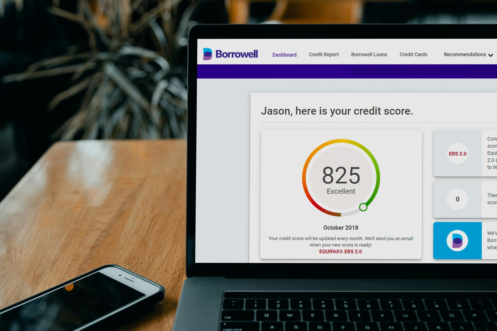

How to Improve Your Credit Score Fast in 2026
How to improve your credit score fast in 2026 — the moves that actually work, how long each takes, and the myths that waste your time.
Z Zar · 22 Apr 2026 — 5 min read

📚 Part of our Budget & Debt Guide
Your credit score affects more of your financial life than almost any other single number. It determines your mortgage rate, car loan rate, credit card approvals, and in some cases your rent and job applications.
The good news: credit scores respond quickly to the right actions. Here is how to improve yours fast.
How Credit Scores Work
Credit scores in the US are calculated by three bureaus — Equifax, Experian, and TransUnion — using models developed by FICO and VantageScore. Most lenders use FICO scores.
FICO scores range from 300 to 850 and are calculated from five factors:
Payment History (35%) — Whether you pay bills on time. The single most important factor.
Credit Utilization (30%) — How much of your available credit you are using. Lower is better.
Length of Credit History (15%) — How long you have had credit accounts. Older accounts help.
Credit Mix (10%) — Having different types of credit — cards, loans, mortgage — helps slightly.
New Credit (10%) — Recent applications for new credit. Each hard inquiry temporarily lowers your score.
What Is a Good Credit Score in 2026?
- 800-850: Exceptional. Best rates on everything.
- 740-799: Very Good. Near-best rates.
- 670-739: Good. Approved for most products at reasonable rates.
- 580-669: Fair. Limited options and higher rates.
- Below 580: Poor. Significant difficulty getting approved.
The difference between a 620 and a 760 score on a $300,000 mortgage can mean $150-$200 more per month in payments — over $50,000 over a 30-year loan.
The Fastest Ways to Improve Your Credit Score
1. Pay Down Credit Card Balances (Impact: High, Timeline: 30-45 days)
Credit utilization — your balance divided by your credit limit — accounts for 30% of your score. Keeping it below 30% is good. Below 10% is optimal.
The Credit Score Improvement Timeline
| Action | Points Added | Timeline |
|---|---|---|
| Pay down utilization to under 10% | 50-100 | 30-45 days |
| Dispute and remove errors | 20-100+ | 30-45 days |
| Become authorized user | 20-50 | 30-60 days |
| 6 months of on-time payments | 20-40 | 6 months |
| 12 months of on-time payments | 40-80 | 12 months |
Starting from a 580 score, implementing all the fast strategies simultaneously and maintaining on-time payments could realistically reach 680-720 within 6 months.
Best Free Credit Monitoring Tools in 2026
Credit Karma — Free weekly FICO scores from TransUnion and Equifax. Shows all your accounts, utilization, and factors affecting your score with specific recommendations.
The Complete Financial Foundation
If your credit card has a $5,000 limit and a $2,500 balance, your utilization is 50% — too high.
Paying that balance to $500 drops utilization to 10% and can increase your score by 50-100 points within one billing cycle.
Action: Calculate your utilization on every card. Pay down balances to get each card below 30% utilization, targeting under 10% if possible.
2. Dispute Credit Report Errors (Impact: High if errors exist, Timeline: 30-45 days)
One in five Americans has an error on their credit report according to the FTC. These errors can significantly lower your score.
Check your credit reports for free at AnnualCreditReport.com — the official government-authorized site. You can now access your reports weekly for free.
Common errors to look for:
- Accounts that are not yours
- Incorrect late payment records
- Duplicate accounts
- Wrong balances or credit limits
- Accounts that should have fallen off after 7 years
Dispute errors directly with the bureau online — Equifax, Experian, and TransUnion all have online dispute portals. Bureaus must respond within 30 days.
3. Become an Authorized User (Impact: Medium-High, Timeline: 30-60 days)
Ask a family member or close friend with excellent credit and low utilization to add you as an authorized user on their credit card.
Their positive history on that account — on-time payments, low utilization, account age — gets added to your credit file. You do not need to use the card or even receive a card.
This strategy can add 20-50 points quickly, especially if you have a thin credit file.
4. Never Miss a Payment (Impact: Highest long-term, Timeline: Ongoing)
Payment history is 35% of your score. A single missed payment can drop your score by 50-100 points and stays on your report for seven years.
Set up autopay for at least the minimum payment on every account. You can always pay more manually — but autopay prevents the catastrophic missed payment.
If you have missed payments in the past, time and consistent on-time payments will gradually reduce their impact.
5. Request a Credit Limit Increase (Impact: Medium, Timeline: Immediate)
Increasing your credit limit without increasing spending directly lowers your utilization ratio.
If your card has a $3,000 limit and $1,000 balance, your utilization is 33%. After a credit limit increase to $6,000 with the same $1,000 balance, utilization drops to 17%.
Call your card issuer or request online. Most issuers approve limit increases for customers with 12+ months of on-time payments and no recent increases.
Important: Do not increase your spending just because your limit increased. The goal is lower utilization, not more credit availability.
6. Do Not Close Old Accounts (Impact: Preserves score, Timeline: Immediate)
Closing a credit card reduces your available credit, increases your utilization ratio, and can shorten your average credit history.
Unless a card has an annual fee you cannot justify, keep old accounts open even if you rarely use them. Put one small automatic charge on them monthly — a streaming subscription works well — and set up autopay to keep them active.
Experian — Free monthly FICO score from Experian. The official bureau score that most mortgage lenders use.
Chase Credit Journey — Free FICO score available to anyone, not just Chase customers. Updated weekly.
What NOT to Do
Do not apply for multiple new cards quickly. Each application triggers a hard inquiry that temporarily lowers your score. Space applications at least 6 months apart.
Do not pay a credit repair company. Anything a credit repair company can do legally, you can do yourself for free. Companies that promise to remove accurate negative information are running a scam.
Do not close cards before applying for a mortgage. The months before a major loan application are the worst time to change anything about your credit profile.
The Bottom Line
Improving your credit score is not complicated. It requires two things: reducing utilization and making every payment on time.
Check your credit reports at AnnualCreditReport.com today. Look for errors. Calculate your utilization on every card. Pay down whichever card has the highest utilization first.
These actions, done this week, can meaningfully move your score within 45 days.
Want to go deeper on this? See How to Build Credit From Scratch in 2026.
For the full breakdown, read Best Money Market Accounts in 2026 (High Yield, Zero Risk).
📥 Free download: The 10-Step Financial Independence Checklist
The exact roadmap I followed to build my financial foundation. 6 pages, professionally designed, free, no email required.
Once your score opens up better cards, the next question is which one fits your spending — we walk through that with a free tool in how to use AI to compare credit cards.
Carrying a balance drags your score down — if that is you, our 12-month credit-card debt plan (with a free payoff planner) shows the fastest way out.